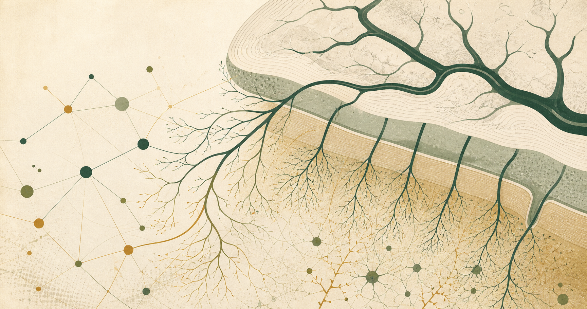

Version 0.6 · Depth and coverage edition
Learn small-vessel disease from vessel wall to research frontier.
Start with vascular anatomy and tissue injury. Then go deep into CAA, brain arteriolosclerosis, MRI phenotypes, STRIVE-2, Boston criteria, neuropathology, cognition, management boundaries, mixed disease, and testable controversies.
Research and education only · 24 chapters · direct source links · transparent gaps

Vessel compartments and evidence relationships are connected—but never interchangeable.
Start with the course
A layered curriculum, not a pile of links
Use the primer for orientation, enter disease and measurement deep dives, then audit claims, contradictions, cohort reuse, and decisive study designs.
Vessel anatomy and neurovascular unit
Connect compartments, cells, flow regulation, barriers, drainage, and selective vulnerability.
Cerebral amyloid angiopathy
Follow amyloid deposition from pathology through hemorrhagic and nonhemorrhagic phenotypes.
MRI phenotypes and STRIVE-2
Learn sequence dependence, definitions, mimics, distributions, and inference limits.
Use the atlas to reason
Move from a finding to an answerable question
Every route retains uncertainty and competing explanations. The database is subordinate to the reasoning task—not the other way around.
Name the phenotype
Use STRIVE language without converting a marker into an etiology.
02 · DIFFERENTIATECompare causes
Ask how location, morphology, context, and co-pathology change probabilities.
03 · AUDITInterrogate the claim
See what is supported, what is unproven, and what would decide it.
04 · INVESTIGATEFind the missing piece
Open research gaps already framed as testable designs.
Clinical boundary
This atlas teaches research-grade interpretation. It does not diagnose a patient, recommend treatment, or treat a radiology-report phrase as pathology-confirmed disease.